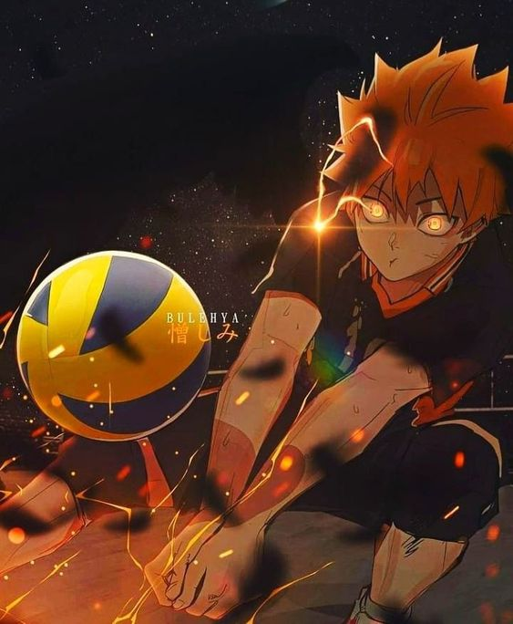

Bola Voli

Dikutip Dari Wikipedia :
Bola voli (bahasa Inggris: volleyball) adalah permainan olahraga yang dimainkan oleh dua grup berlawanan. Masing-masing grup memiliki enam orang pemain.
Terdapat pula variasi permainan bola voli pantai yang masing-masing timnya hanya memiliki dua orang pemain. Olahraga ini dinaungi FIVB (Fédération Internationale de Volleyball) sebagai induk organisasi internasional.
Sedangkan di Indonesia, olahraga bola Voli dinaungi oleh PBVSI (Persatuan Bola Voli Seluruh Indonesia).